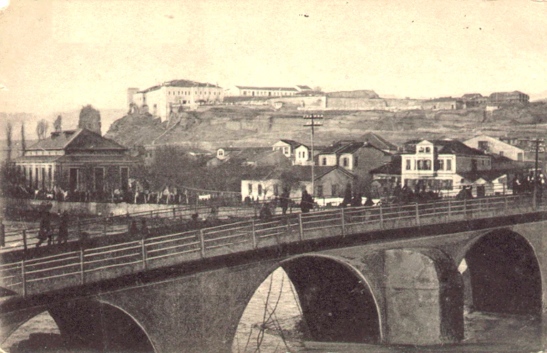
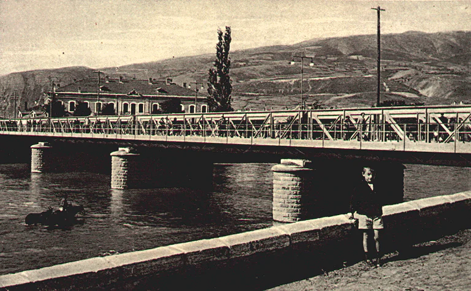
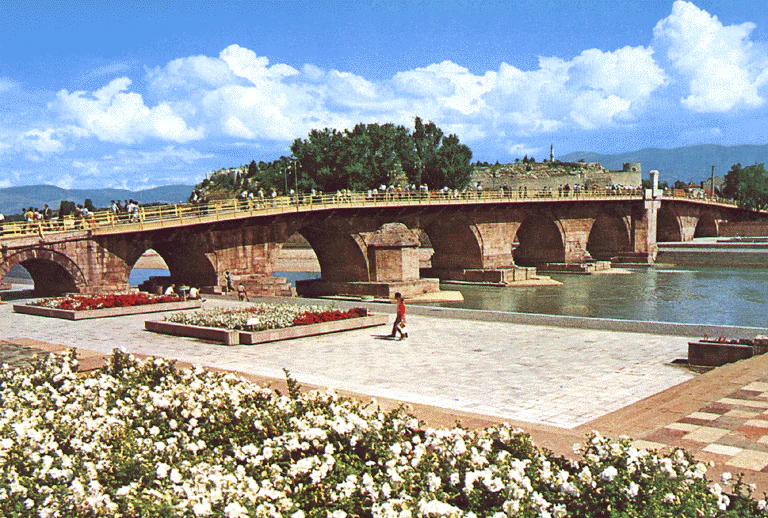
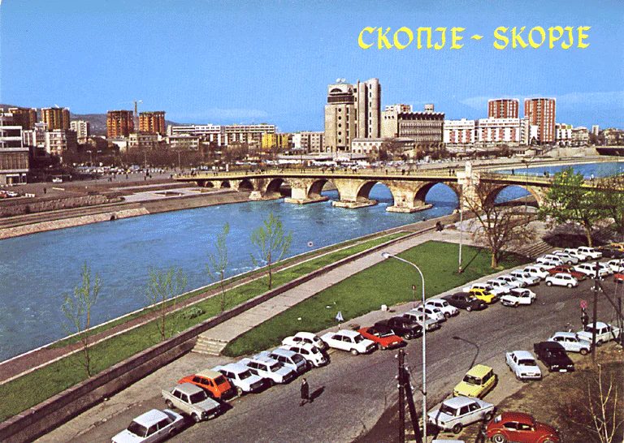

Σκόπια 1916 - 1917 γέφυρα
Έγγραφα από τους Βαλκανικούς πολέμους
- Έτος
- 1916-1917
- Διάρκεια
- 00:13

Στο κέντρο της πόλης, πάνω στον Βαρδάρη, χτίστηκε μια μνημειακή πέτρινη γέφυρα (γνωστή ως Πέτρινη γέφυρα). Σύμφωνα με ορισμένες τουρκικές πηγές η γέφυρα χτίστηκε στο δεύτερο μισό του 15ου αιώνα, επί σουλτάνου Μωάμεθ Β΄. Σύμφωνα με τις νεότερες έρευνες του 1990, κατά την ανακατασκευή της, υποθέτεται ότι χτίστηκε την εποχή του Ιουστινιανού Α΄ τον 6ο αιώνα. Είναι χτισμένη από καλά δουλεμένους λίθινους όγκους, και η κατασκευή της στηρίζεται σε ισχυρά βάθρα, συνδεδεμένα με ημικυκλικά τόξα - 13 τον αριθμό. Το 1905 κατασκευάστηκαν τσιμεντένια πεζοδρόμια, που πριν ήταν σκεπασμένα με σανίδες. Το 1937 διαπλατύνθηκε με κονσόλες, όπου μεταφέρθηκαν τα πεζοδρόμια. Στη φωτογραφία τα Σκόπια στα τέλη του 19ου αιώνα. Θέα της Πέτρινης γέφυρας και του παλιού πλάτανου. Πάνω δεξιά το φρούριο των Σκοπίων - Καλέ με τον στρατώνα.

Η Πέτρινη γέφυρα - τέλη του 19ου αιώνα. Στο βάθος αριστερά φαίνεται το Τζαμί Μπουρμαλί.

Η Πέτρινη γέφυρα - τέλη του 19ου αιώνα. Στο βάθος αριστερά φαίνεται το Τζαμί Μπουρμαλί.

Τα Σκόπια στα τέλη του 19ου και τις αρχές του 20ού αιώνα (καλοκαίρι) - θέα της Πέτρινης γέφυρας. Στο πρώτο πλάνο τηλεφωνική κολόνα με ταχυδρομικό κουτί. Ακριβώς δίπλα της ένα φανάρι, η πρώτη μορφή αστικού εξοπλισμού. Επειδή είναι καλοκαίρι, οι πεζοί προστατεύονται από τον ήλιο με ομπρέλες. Για τη μεταφορά φορτίων χρησιμοποιούνταν βοϊδάμαξες, ενώ οι άμαξες ήταν το δημόσιο μέσο μεταφοράς των πολιτών. Ακριβώς δίπλα στη γέφυρα δεξιά φαίνεται ένας μεγάλος τροχός νερόμυλου.

Τα Σκόπια στα τέλη του 19ου και τις αρχές του 20ού αιώνα (τον χειμώνα) - θέα της Πέτρινης γέφυρας. Στο πρώτο πλάνο τηλεφωνική κολόνα με ταχυδρομικό κουτί. Ακριβώς δίπλα τους ένα φανάρι, η πρώτη μορφή αστικού εξοπλισμού. Διακρίνονται μη λιθόστρωτοι, λασπωμένοι δρόμοι. Στο βάθος η εβραϊκή συνοικία και το φρούριο των Σκοπίων - Καλέ.

Πανόραμα της Πέτρινης γέφυρας στις αρχές του 20ού αιώνα.

Η Πέτρινη γέφυρα - περίπου 1905. Στο βάθος, πάνω αριστερά, φαίνεται το φρούριο των Σκοπίων - Καλέ με τους στρατώνες. Δεξιά ο παλιός πλάτανος.

Η Πέτρινη γέφυρα στα τέλη του 19ου και τις αρχές του 20ού αιώνα. Πάνω δεξιά φαίνεται το φρούριο των Σκοπίων - Καλέ.

Τα Σκόπια την τουρκική περίοδο - αρχές του 20ού αιώνα. Στη φωτογραφία φαίνεται ότι το ένα μισό της Πέτρινης γέφυρας έχει πέτρινο στηθαίο, και το άλλο προσωρινό κιγκλίδωμα από σίδερο και ξύλο. Το 1905 άρχισε η αντικατάσταση του πέτρινου στηθαίου με σιδερένιο. Στα Σκόπια την τουρκική περίοδο - αρχές του 20ού αιώνα. Στη φωτογραφία φαίνεται ότι το ένα μισό της Πέτρινης γέφυρας έχει πέτρινο στηθαίο, και το άλλο προσωρινό κιγκλίδωμα από σίδερο και ξύλο. Το 1905 άρχισε η αντικατάσταση του πέτρινου στηθαίου με σιδερένιο. Στην αριστερή γωνία, πίσω από την Πέτρινη γέφυρα, φαίνεται το τουρκικό θέατρο. Ακριβώς δίπλα στη γέφυρα δεξιά φαίνεται ένας μεγάλος τροχός νερόμυλου. Δεξιά ο παλιός πλάτανος όπου κρεμάστηκε το νεκρό σώμα του Κάρπος, αμέσως μετά την καταστολή της εξέγερσης του Κάρπος - 1689. Στο βάθος φαίνεται ολόκληρο το φρούριο των Σκοπίων - Καλέ και κατοικίες στην εβραϊκή συνοικία. Ενδιαφέρουσα είναι η λεύκανση υφασμάτων από τις γυναίκες στα καθαρά νερά του Βαρδάρη - στο πρώτο πλάνο της φωτογραφίας.

Ομάδα Τούρκων στην Πέτρινη γέφυρα - αρχές του 20ού αιώνα. Αξίζει να προσέξει κανείς ότι τα πεζοδρόμια της γέφυρας είναι καλυμμένα με σανίδες.

Η σιδηροδρομική γέφυρα στον Βαρδάρη στα Σκόπια - τέλη του 19ου αιώνα.

Πέτρινη γέφυρα στον ποταμό Πτσίνια - περίχωρα των Σκοπίων (δεν σώζεται σήμερα). Κρίνοντας από τον άνθρωπο που στέκεται στην κορυφή της, το ύψος της γέφυρας είναι περίπου 15 μέτρα από την επιφάνεια του νερού. (Δεκαετία του 1910)

Σκόπια 1902. Στη φωτογραφία φαίνεται η ξύλινη γέφυρα, και πίσω της το παλιό καφενείο «Μπόγκες», όπου γίνονταν οι πρώτες θεατρικές παραστάσεις. Από πάνω το φρούριο των Σκοπίων - Καλέ με τον στρατώνα.

Η Πέτρινη γέφυρα - 1905. Αριστερά, πίσω της, φαίνεται το Τουρκικό Θέατρο, και στο επάνω μέρος το φρούριο των Σκοπίων - Καλέ.

Θέα προς τη δεξιά όχθη του Βαρδάρη μέσα από το φύλλωμα του παλιού πλάτανου - περίπου 1910. Περιλαμβάνονται: τμήμα της Πέτρινης γέφυρας, το Τζαμί Μπουρμαλί και τα μαγαζιά μπροστά του.

Τα Σκόπια πριν από το 1912. Η Πέτρινη γέφυρα με κονσόλες και σιδερένιο κιγκλίδωμα. Δεξιά ο παλιός πλάτανος, και πάνω φαίνεται το φρούριο των Σκοπίων - Καλέ.

Τα Σκόπια κατά τον Βαλκανικό πόλεμο. Στο βάθος το Τζαμί Μπουρμαλί.

Θέα από τμήμα της Πέτρινης γέφυρας προς το φρούριο των Σκοπίων - Καλέ (περίπου 1910)

Θέα τμήματος της Πέτρινης γέφυρας, και στο βάθος αριστερά φαίνεται το τουρκικό θέατρο. Πάνω από αυτό υψώνεται το φρούριο των Σκοπίων - Καλέ. (περίπου 1910)

Η Πέτρινη γέφυρα με μια ομάδα ανθρώπων πάνω της - περίπου 1913

Η Πέτρινη γέφυρα στον Βαρδάρη στα Σκόπια - περίπου 1913

Η Πέτρινη γέφυρα στον Βαρδάρη στα Σκόπια - περίπου 1913. Στο βάθος, πάνω δεξιά, φαίνεται το φρούριο των Σκοπίων - Καλέ.

Σκόπια 1912 - Ζωγραφικός πίνακας. Η Πέτρινη γέφυρα και το Τζαμί Μπουρμαλί. Στο βάθος μια υπέροχη πράσινη ζώνη από λεύκες. Διακρίνεται η παρεμβολή κλασικής αρχιτεκτονικής. Οι νέοι χώροι της προκυμαίας αποτελούν νέο αστικό στοιχείο. Τα συγκροτήματα κατοικιών, εμπορικών και βιοτεχνικών κτιρίων μπροστά στη γέφυρα λειτουργούν και είναι αναπόσπαστο μέρος της σύνθεσης, με παραδοσιακά γνωρίσματα και στοιχεία ευρωπαϊκών επιρροών.

Η Σιδερένια γέφυρα στον Βαρδάρη στα Σκόπια με θέα προς το παλιό σχολείο, τον Άγιο Μηνά και την Παναγία - περίπου 1920.

Η Σιδερένια γέφυρα, χτισμένη το 1905. Στο βάθος το κτίριο του πρώτου Πανεπιστημίου των Σκοπίων. (1915)

Η Σιδερένια γέφυρα, χτισμένη το 1905. Στο βάθος το κτίριο του πρώτου Πανεπιστημίου των Σκοπίων. (Δεκαετία του 1920.)

Η Σιδερένια γέφυρα στον Βαρδάρη στα Σκόπια, χτισμένη το 1905. Στο βάθος το κτίριο του πρώτου Πανεπιστημίου των Σκοπίων. (Δεκαετία του 1920)

Η Σιδερένια γέφυρα, χτισμένη το 1905. (Δεκαετία του 1920)

Η Σιδερένια γέφυρα στον Βαρδάρη στα Σκόπια με θέα τα κτίρια της προκυμαίας «Ντιμιτάρ Βλάχοφ». (Δεκαετία του 1920)

Σκόπια, περίπου 1920. Τμήμα της πλατείας της πόλης μπροστά στην Πέτρινη γέφυρα. Τα πρώτα περίπτερα για εξυπηρέτηση και πώληση. Τα περίπτερα έχουν τονισμένη αρχιτεκτονική στις λεπτομέρειες, δηλαδή στη διαμόρφωση των στεγών. Η γέφυρα έχει διαπλατυνθεί με κονσόλες για πεζούς. Στο βάθος, πάνω, φαίνεται το φρούριο των Σκοπίων - Καλέ.

Σκόπια, περίπου 1920. Τμήμα της πλατείας της πόλης μπροστά στην Πέτρινη γέφυρα. Μπροστά και πάνω στην Πέτρινη γέφυρα διακρίνονται μικρές κατασκευές για την ενημέρωση των πολιτών με αφίσες. Η γέφυρα έχει διαπλατυνθεί με κονσόλες για πεζούς. Στο βάθος, πάνω αριστερά, φαίνεται το φρούριο των Σκοπίων - Καλέ.

Η Πέτρινη γέφυρα με μια ομάδα ανθρώπων που κοιτάζουν την ανυψωμένη στάθμη του Βαρδάρη. (Δεκαετία του 1920)

Η Πέτρινη γέφυρα - 1920. Στο βάθος φαίνεται η Οθωμανική Τράπεζα.

Θέα από την Πέτρινη γέφυρα προς την Παλιά Πόλη και τη συνοικία Πάικο με το ιατρείο του οδοντιάτρου Δρ Ρούμπενς και την Οθωμανική Τράπεζα - περίπου 1927.

Θέα από την Πέτρινη γέφυρα προς την Παλιά Πόλη, την αγορά και την πλαγιά του Γαζή Μπαμπά. Ακριβώς δίπλα στη γέφυρα δεξιά βρισκόταν το ιατρείο του οδοντιάτρου Δρ Ρούμπενς. Λίγο πιο δεξιά το κτίριο της Οθωμανικής Τράπεζας. Ανάμεσά τους υπήρχε μια μικρή πλατεία με πιάτσα αμαξών. Στη μέση της πλατείας ήταν το μνημείο των πεσόντων στον Βαλκανικό πόλεμο - περίπου 1927.

Θέα από την Πέτρινη γέφυρα προς την Παλιά Πόλη, την αγορά και την πλαγιά του Γαζή Μπαμπά. Ακριβώς δίπλα στη γέφυρα δεξιά βρισκόταν το ιατρείο του οδοντιάτρου Δρ Ρούμπενς. Λίγο πιο δεξιά το κτίριο της Οθωμανικής Τράπεζας. Ανάμεσά τους υπήρχε μια μικρή πλατεία με πιάτσα αμαξών. Στη μέση της πλατείας ήταν το μνημείο των πεσόντων αγωνιστών - περίπου 1927.

Θέα από την Πέτρινη γέφυρα προς την Παλιά Πόλη και τη συνοικία Πάικο με το ιατρείο του οδοντιάτρου Δρ Ρούμπεν και την Οθωμανική Τράπεζα - περίπου 1927.

Θέα προς τη δεξιά όχθη του Βαρδάρη με τμήμα της γέφυρας και τη Λέσχη Αξιωματικών - Δεκαετία του 1930. Αριστερά φαίνεται το υπόλειμμα του κομμένου παλιού πλάτανου, όπου το 1689, μετά την καταστολή της εξέγερσης, κρεμάστηκε το νεκρό σώμα του Κάρπος.

Θέα τμήματος της Πέτρινης γέφυρας, του παλιού πλάτανου και του φρουρίου των Σκοπίων - Καλέ - περίπου 1920.

Σκόπια, περίπου 1920. Η Πέτρινη γέφυρα με το φρούριο των Σκοπίων - Καλέ στο βάθος. Στο πρώτο πλάνο λεύκανση υφασμάτων στα καθαρά νερά του Βαρδάρη.

Θέα του ξύλινου γεφυριού και της προκυμαίας στη δεξιά όχθη του Βαρδάρη. Τα κτίρια έχουν νεοκλασικές και μπαρόκ λεπτομέρειες στην αρχιτεκτονική τους έκφραση. Ο δρόμος είναι η σημερινή «Ιλιντένσκα». Στη σειρά των κτιρίων είναι και το Μουσικό Λύκειο. Στο πρώτο πλάνο το ξύλινο γεφυράκι, από όπου πήγαινε κανείς στο Εθνικό Θέατρο.

Το ξύλινο γεφυράκι στον Βαρδάρη, με τη Λέσχη Αξιωματικών στο βάθος. Δίπλα του τα κτίρια της τράπεζας και του παλιού ταχυδρομείου - τέλη της δεκαετίας του 1920.

Θέα του ξύλινου γεφυριού στον Βαρδάρη, και στο βάθος φαίνονται η Λέσχη Αξιωματικών, το παλιό ταχυδρομείο και η τράπεζα - περίπου 1930.

Θέα προς το φρούριο των Σκοπίων - Καλέ με τον στρατώνα. Από κάτω βρίσκεται η εβραϊκή συνοικία. Στο πρώτο πλάνο το ξύλινο γεφυράκι - Δεκαετία του 1950.

Θέα προς το Εθνικό Θέατρο και το ξύλινο γεφυράκι - Δεκαετία του 1930.

Η Πέτρινη γέφυρα - Δεκαετία του 1930. Στο βάθος το Εθνικό Θέατρο, και πάνω από αυτό το φρούριο των Σκοπίων - Καλέ.

Θέα τμήματος της πλατείας και της Πέτρινης γέφυρας. Στο βάθος, αριστερά, φαίνονται το Εθνικό Θέατρο και το φρούριο των Σκοπίων - Καλέ. Αξιοσημείωτη η άμαξα ως κύριο μέσο μεταφοράς των πολιτών. Στο πρώτο πλάνο κατεδαφισμένα κτίρια για την ανέγερση της Εθνικής Τράπεζας - περίπου 1930.

Φουσκωμένα νερά του Βαρδάρη. Η γέφυρα είναι μισοσκεπασμένη από το νερό. Η φωτογραφία τραβήχτηκε από τη δεξιά προς την αριστερή όχθη - Δεκαετία του 1930.

Ανακατασκευή και αντικατάσταση του λιθόστρωτου της Πέτρινης γέφυρας. Θέα του μεγάρου Ρίστιτς και των πρώτων περιπτέρων - περίπου τη δεκαετία του 1930.

Θέα από την Πέτρινη γέφυρα προς την πλατεία. Αριστερά καθαρίζεται ο χώρος για την ανέγερση της Εθνικής Τράπεζας - Δεκαετία του 1930.

Θέα από την αριστερή όχθη του Βαρδάρη προς την Πέτρινη γέφυρα και τη Λέσχη Αξιωματικών - Δεκαετία του 1930.

Η Πέτρινη γέφυρα στον Βαρδάρη - περίπου 1930. Στο βάθος φαίνεται το Εθνικό Θέατρο, και πάνω δεξιά το φρούριο των Σκοπίων - Καλέ.

Η Πέτρινη γέφυρα - Δεκαετία του 1950.

Τμήμα της Πέτρινης γέφυρας. Στο βάθος φαίνεται το ξενοδοχείο «Γκραντ». - Δεκαετία του 1960

Η Πέτρινη γέφυρα με το φρούριο των Σκοπίων - Καλέ τη δεκαετία του 1960, πριν από τη διαμόρφωση της προκυμαίας.

Θέα της Πέτρινης γέφυρας και του φρουρίου των Σκοπίων - Καλέ. (Δεκαετία του 1970)

Η Πέτρινη γέφυρα τη δεκαετία του 1970 με τον μεσαίο χώρο της προκυμαίας.

Η Πέτρινη γέφυρα και η πλατεία τη δεκαετία του 1970.

Θέα, από τη δεξιά προς την αριστερή όχθη του Βαρδάρη, προς την Πέτρινη γέφυρα, τμήμα της πλατείας και το νέο ταχυδρομείο στο βάθος. (Δεκαετία του 1970)

Η σημερινή γέφυρα «Γκότσε Ντέλτσεφ», φωτογραφημένη από το φρούριο των Σκοπίων - Καλέ. (Δεκαετία του 1990)

Έγγραφα από τους Βαλκανικούς πολέμους
 Υδραγωγείο4 καρτ-ποστάλ
Υδραγωγείο4 καρτ-ποστάλ Καλέ30 καρτ-ποστάλ
Καλέ30 καρτ-ποστάλ Γέφυρες60 καρτ-ποστάλ
Γέφυρες60 καρτ-ποστάλ Προκυμαία58 καρτ-ποστάλ
Προκυμαία58 καρτ-ποστάλ Πλατεία46 καρτ-ποστάλ
Πλατεία46 καρτ-ποστάλ Κτίρια66 καρτ-ποστάλ
Κτίρια66 καρτ-ποστάλ Χριστιανικοί ναοί19 καρτ-ποστάλ
Χριστιανικοί ναοί19 καρτ-ποστάλ Μουσουλμανικά κτίρια33 καρτ-ποστάλ
Μουσουλμανικά κτίρια33 καρτ-ποστάλ Λέσχη Αξιωματικών29 καρτ-ποστάλ
Λέσχη Αξιωματικών29 καρτ-ποστάλ Θέατρο28 καρτ-ποστάλ
Θέατρο28 καρτ-ποστάλ Σιδηροδρομικός σταθμός13 καρτ-ποστάλ
Σιδηροδρομικός σταθμός13 καρτ-ποστάλ Σχολεία36 καρτ-ποστάλ
Σχολεία36 καρτ-ποστάλ Πάρκα12 καρτ-ποστάλ
Πάρκα12 καρτ-ποστάλ Αγορές18 καρτ-ποστάλ
Αγορές18 καρτ-ποστάλ Δρόμοι38 καρτ-ποστάλ
Δρόμοι38 καρτ-ποστάλ Πανόραμα I60 καρτ-ποστάλ
Πανόραμα I60 καρτ-ποστάλ Πανόραμα II30 καρτ-ποστάλ
Πανόραμα II30 καρτ-ποστάλ Κολάζ55 καρτ-ποστάλ
Κολάζ55 καρτ-ποστάλ Πλημμύρες9 καρτ-ποστάλ
Πλημμύρες9 καρτ-ποστάλ Σεισμός27 καρτ-ποστάλ
Σεισμός27 καρτ-ποστάλ Σκόπια 200026 καρτ-ποστάλ
Σκόπια 200026 καρτ-ποστάλ